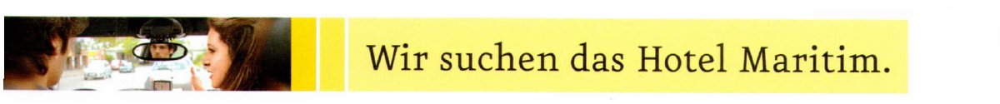
aBiegen Sie links ab.
bFahren Sie circa noch 200 Meter geradeaus.
cWenden Sie hier.
dFahren Sie nach rechts.
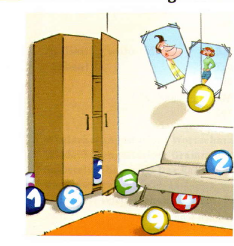
aErgänzen Sie das Rätsel.
bErgänzen Sie die Wörter aus a und vergleichen Sie.
BASISTRAINING
Wo ist denn …
a… das Hotel „Kirchblick“? – Das ist direkt am Bahnhof.
BASISTRAINING
Lesen Sie die SMS. Was antwortet Marina? Schreiben Sie Marinas E-Mail fertig.
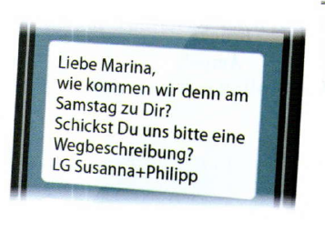
Von: Marina Kreuzner · An: philippX@web.de · Betreff:
Liebe Susanna, lieber Philipp,
den Weg kann ich Euch leicht beschreiben. Meinburg ist nicht groß und ich wohne im Zentrum. Ihr fahrt nach Meinburg und seht gleich eine Brücke. …
Bis Samstag! Viele Grüße, Marina
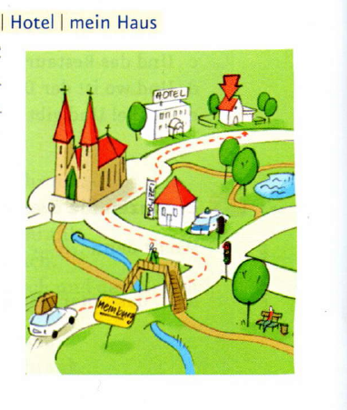
BASISTRAINING
TRAINING: HÖREN
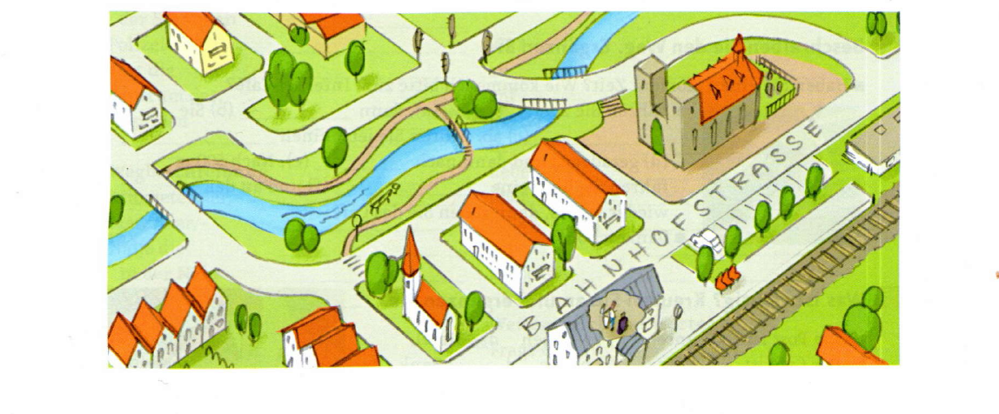
TRAINING: AUSSPRACHE · Diphthonge „ei“, „eu“, „au“
Man hört „ai“, man schreibt meistens: ei
Man hört „oi“, man schreibt meistens: eu
Man hört „au“ und schreibt auch: au
TEST
| Wörter | Strukturen | Kommunikation | |
|---|---|---|---|
| Ich muss noch üben. | 0–5 | 0–5 | 0–4 |
| Das kann ich schon. | 6–8 | 6–7 | 5–7 |
| Super, das kann ich! | 9–11 | 8–10 | 8–9 |
LERNWORTSCHATZ
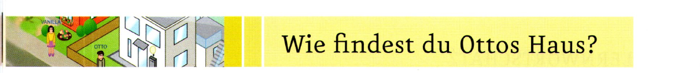
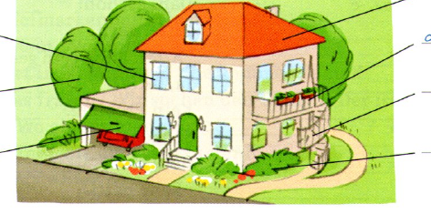
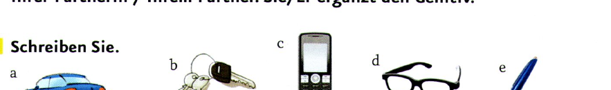
BASISTRAINING
aErgänzen Sie.
bNotieren Sie die Nominative aus a. Und ergänzen Sie dann die Akkusative.
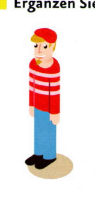
| Deutsch | Englisch | Meine Sprache oder andere Sprachen | |||
|---|---|---|---|---|---|
| Das ist/sind … · Sie / Er sucht … | This is / These are … · She / He is looking for … | … | |||
| ihr Schirm | ihren Schirm | her umbrella | her umbrella | … | |
| sein Auto | sein Auto | his car | his car | … | |
| ihre Brille | ihre Brille | her glasses | her glasses | … | |
| seine Kinder | seine Kinder | his children | his children | … | |
BASISTRAINING
afinden/das Sofa/Wie/du/? · baussehen/toll/Sofa/,/Das/,/. · cfinden,/Sessel/du/wie/Und/den/? · dmögen/ich/Den Sessel/gar nicht/. · eIch/toll/finden/den Sessel/,/.
vermietetbezahltmöbliertquadratmeteranzeigemiete lichtwassermüllvermieterin
TRAINING: LESEN
Liebe Leute! Hilfe!!!
Wir suchen dringend eine 3 bis 4-Zimmer-Wohnung ab 1. April. Die Wohnung sollte maximal 1000 Euro inkl. Nebenkosten kosten. Hat jemand einen Tipp? Dann meldet Euch doch bitte so schnell wie möglich.
Grüße von Stefan
Größe?
Miete?
Ab wann?
aLesen Sie und markieren Sie die wichtigen Informationen. Ergänzen Sie dann die Tabelle.
Angebot an der Uni, super günstige Wohnung von privat: 3,5 Zimmer, frei ab 1. Mai. Ruf doch mal an: 0171/675541. Vielleicht ist das etwas für Stefan?! Viel Glück! Tina
Schau doch mal ins Abendblatt! 4 Zimmer, ab 1.4., 1000 € + Nebenkosten
Lieber Stefan, ich habe den ultimativen Tipp für Dich! Die Nachbarn von meiner Schwester ziehen nach England und suchen dringend einen Nachmieter zum 1. April. Tolle 4-Zimmer-Wohnung mit Südbalkon. Die Wohnung kostet nur 700 € + Nebenkosten. Ruf meine Schwester am besten heute noch an. LG Chris
bWelche Wohnung passt am besten? Kreuzen Sie an.
TRAINING: AUSSPRACHE · Plural mit „ö“ und „ü“
Mein Traumhaus
viele Räume,
zwei Bäder
und Aufzug,
im Garten
Bäume.
Alles ganz neu!
TEST
SCHLAFZIMMER · WOHNUNG · TOILETTE · KINDERZIMMER · GARTEN · ERDGESCHOSS · WOHNZIMMER
| Wörter | Strukturen | Kommunikation | |
|---|---|---|---|
| Ich muss noch üben. | 0–3 | 0–4 | 0–3 |
| Das kann ich schon. | 4 | 5–7 | 4 |
| Super, das kann ich! | 5–6 | 8–9 | 5–6 |
LERNWORTSCHATZ
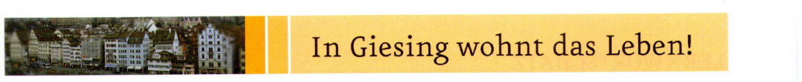
aHören Sie und nummerieren Sie.
bErgänzen Sie aus a. Notieren und vergleichen Sie.
BASISTRAINING
aSchreiben Sie Aufgaben wie in 3: Was sehen Sie? Was machen Sie dort? bTauschen Sie mit Ihrer Partnerin / Ihrem Partner. Sie/Er rät.
BASISTRAINING
TRAINING: SPRECHEN
Was brauchen Sie in Ihrem Stadtteil?
| Ich | Meine Partnerin / Mein Partner A | Meine Partnerin / Mein Partner B | |
|---|---|---|---|
| 1. | |||
| 2. | |||
| 3. |
– Was brauchst du in deinem Stadtteil?
– Einen Park. Ich bin oft im Park und gehe spazieren oder lese. Am Wochenende treffe ich Freunde im Park.
TRAINING: AUSSPRACHE · Vokale: langes „e“ und „i“
TEST
| Wörter | Strukturen | Kommunikation | |
|---|---|---|---|
| Ich muss noch üben. | 0–5 | 0–2 | 0–2 |
| Das kann ich schon. | 6–7 | 3 | 3 |
| Super, das kann ich! | 8–10 | 4–5 | 4–5 |
LERNWORTSCHATZ
WIEDERHOLUNGSSTATION: WORTSCHATZ
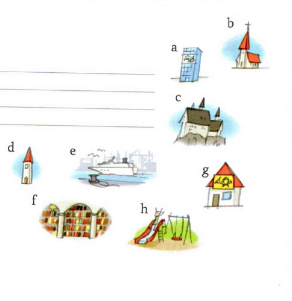
WIEDERHOLUNGSSTATION: GRAMMATIK
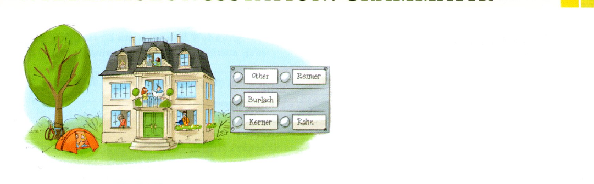
SELBSTEINSCHÄTZUNG · Das kann ich!
SELBSTEINSCHÄTZUNG · Das kann ich!
Diese Orte besuche ich gern:
Diese Orte besuche ich fast nie/nie:
Diese Einrichtungen brauche ich oft:
Das gibt es in meiner Wohnung / in meinem Haus:
Das gibt es nicht in meiner Wohnung / in meinem Haus:
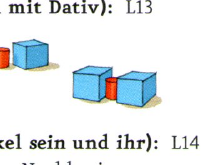
RÜCKBLICK · Wählen Sie eine Aufgabe zu Lektion 13
Ich gehe geradeaus und dann biege ich an der Ampel rechts ab. An der Bank biege ich rechts ab und gehe geradeaus. Ich gehe an der Kirche vorbei und weiter geradeaus bis zum Bahnhof.
RÜCKBLICK · Wählen Sie eine Aufgabe zu Lektion 14
| Zimmer | Größe | Was gibt es noch? | Kosten | |
|---|---|---|---|---|
| A | 2 Zimmer | 54 m² | Balkon, Aufzug, Tiefgarage | 400,– € + Nebenkosten |
| B | 1,5–2 Zimmer | 40–50 m² | gern möbliert | bis 500,– € |
| C | 4 Zimmer, Küche, 2 Bäder | 120 m² | Garten | 880,– € + 200,– € Nebenkosten |
| D | 2 Zimmer, Küche | 32 m² | Kühlschrank, Herd | 320,– € |
| E | verschiedene Größen | 30–70 m² | – | 360,– bis 880,– € |
Wählen Sie eine Aufgabe zu Lektion 15
Das gefällt mir in Giesing:
Das gefällt mir nicht so gut in Giesing:
Das möchte ich noch wissen:
hat geschrieben:
LITERATUR · Wiedersehen in Wien
Das ist bisher passiert: Paul und sein Hund Herr Rossmann machen Urlaub in München. Dort treffen sie Anja. Die drei werden Freunde. Sie machen viele Dinge gemeinsam, aber schon bald müssen Paul und Herr Rossmann wieder zurück nach Wien fahren. Zwei Wochen sind zu kurz, finden sie.
»Das ist schön hier …«, denkt Anja. Sie ist gerade aus der U-Bahn ausgestiegen und steht vor dem Schloss Schönbrunn in Wien.
»Entschuldigen Sie, ich suche die Penzinger Straße«, sagt sie zu einem Mann.
»Hm, ich bin nicht von hier. Ich kenne diese Straße nicht.«
»Und Sie? Können Sie mir helfen? Wo ist die Penzinger Straße?«
»Pardon?«
»Gibt es hier nur Touristen?!«, denkt Anja.
Sie fragt eine alte Frau: »Entschuldigen Sie, ich suche die Penzinger Straße.«
»Ja, die ist ganz in der Nähe. Gehen Sie geradeaus über den Platz hier. Sehen Sie die Straßenbahnstation dort? Da gehen Sie nach links und dann nach rechts. Die nächste Straße ist die Penzinger Straße.«
»Vielen Dank!«
Anja nimmt ihren Koffer und geht los. »Hoffentlich ist Paul zu Hause«, denkt sie. »Er weiß ja nicht, dass ich ihn besuchen komme.«
»Was ist denn los, Herr Rossmann?«, fragt Paul. Sein Hund läuft schon den ganzen Morgen in der Wohnung herum: zum Fenster, zur Tür, zum Fenster …
»Ja, ich sehe schon, Herr Rossmann, du wartest auf einen Gast. Aber heute kommt uns niemand besuchen.«
Herr Rossmann bellt. »Bitte, Herr Rossmann!«
Herr Rossmann läuft zur Tür und bellt wieder. »Herr Rossmann, was ist …«
Es klingelt. Doch ein Gast?
Paul öffnet die Tür und …
»Anja! … Du bist in Wien? Das ist ja eine tolle Überraschung.«
»Ich komme dich besuchen. Kann ich reinkommen?«
»Ja, klar, komm rein. Ich nehme deinen Koffer.«
Herr Rossmann bellt. »Hallo Herr Rossmann, endlich sehe ich dich wieder!«, sagt Anja und streichelt den Hund.
»Wie geht es dir, Anja?«, fragt Paul. »Bist du müde von der Reise? Möchtest du etwas essen? Oder einen Kaffee?«
»Oh ja, Kaffee ist gut … Und dann suchen wir ein Hotel für mich.«
»Ach was, Hotel. Du kannst hier auf dem Sofa schlafen.«
»Wirklich? Super, danke! Dann können wir ja gleich Wien ansehen.«
»Ja, den Stephansdom, das Riesenrad, das Schloss Schönbrunn …«
»Das habe ich schon gesehen«, sagt Anja und lacht. »Aber mit dem Stephansdom können wir anfangen.«
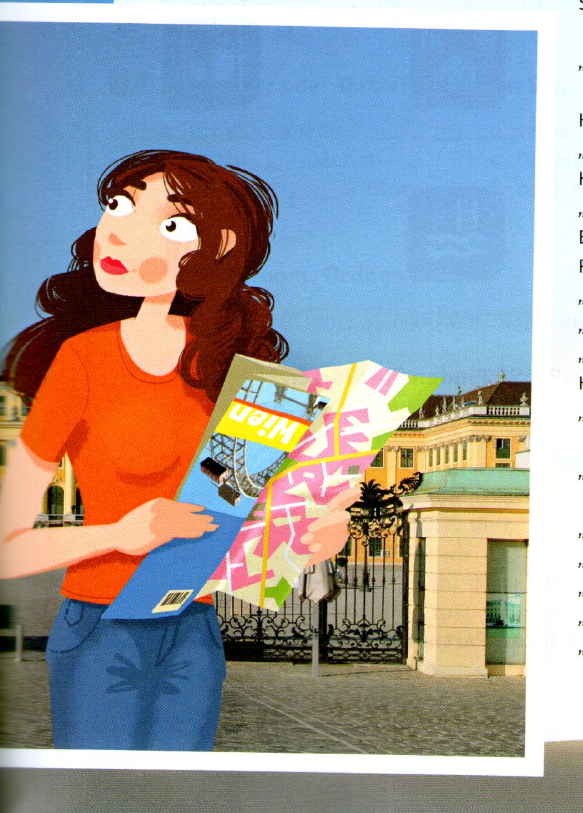
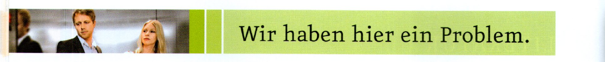
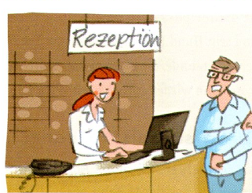
BASISTRAINING
| Rezeptionist/in | Gast |
|---|---|
| helfen können | Kann ich Ihnen helfen? |
| Problem haben → | |
| Fernseher kaputt → | |
| Techniker schicken → | |
| sofort darum kümmern → | |
| Eine Bitte noch: Es gibt keine Handtücher. | |
| sofort Handtücher bringen → | |
| Dank für Hilfe → |
Der Fernseher ist kaputt. – Da muss ich einen Techniker schicken. Ich kümmere mich sofort darum. – Eine Bitte noch: Es gibt keine Handtücher. – Ich bringe Ihnen sofort Handtücher. – Vielen Dank für Ihre Hilfe.
BASISTRAINING
aErgänzen Sie die E-Mail.
Von: p.frei@gmx.de · An: chriswinter@aol.com
Sehr geehrte Frau Winter,
leider . Wir haben ein Problem mit der Internetverbindung in der Firma und ich warte auf den Techniker.
Mit freundlichen Grüßen
Peter Frei
… kann ich heute um 16 Uhr nicht kommen. · Können wir den Termin verschieben? · Haben Sie am Mittwoch Zeit? · Ab Freitag bin ich für eine Woche im Urlaub.
bAntworten Sie auf die E-Mail.
Von: chriswinter@aol.com · An: p.frei@gmx.de · Re: Termin heute
Sehr
Sehr geehrter Herr Frei, kein Problem. Natürlich können wir den Termin verschieben. Am Mittwoch habe ich Zeit. Passt Ihnen 15 Uhr? Mit freundlichen Grüßen, Christine Winter
TRAINING: SPRECHEN
Entschuldigung, können Sie mir helfen? · Kann ich mal …? · Ich habe ein Problem: …
Ja, natürlich. · Tut mir leid, …
Spielanleitung: Stellen Sie Ihre Spielfigur auf ein Feld und würfeln Sie. Ziehen Sie mit Ihrer Spielfigur. Formulieren Sie Bitten. Ist die Bitte richtig, bekommen Sie zwei Punkte. Spielen Sie zehn Minuten. Wer hat die meisten Punkte?
■ Entschuldigung, können Sie mir helfen? Die Klimaanlage funktioniert nicht.
▲ Das tut mir leid. Ich kümmere mich sofort darum.
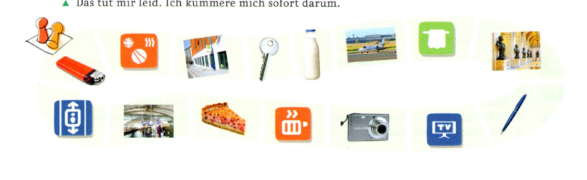
TRAINING: AUSSPRACHE · Vokale: „o“ und „u“
■ Entschuldigen Sie, ich habe ein Problem: Die Dusche funktioniert nicht.
▲ Oh, das tut mir leid. Ich komme sofort.
TEST
| Wörter | Strukturen | Kommunikation | |
|---|---|---|---|
| Ich muss noch üben. | 0–3 | 0–3 | 0–2 |
| Das kann ich schon. | 4–5 | 4–5 | 3 |
| Super, das kann ich! | 6–7 | 6–7 | 4–5 |
LERNWORTSCHATZ